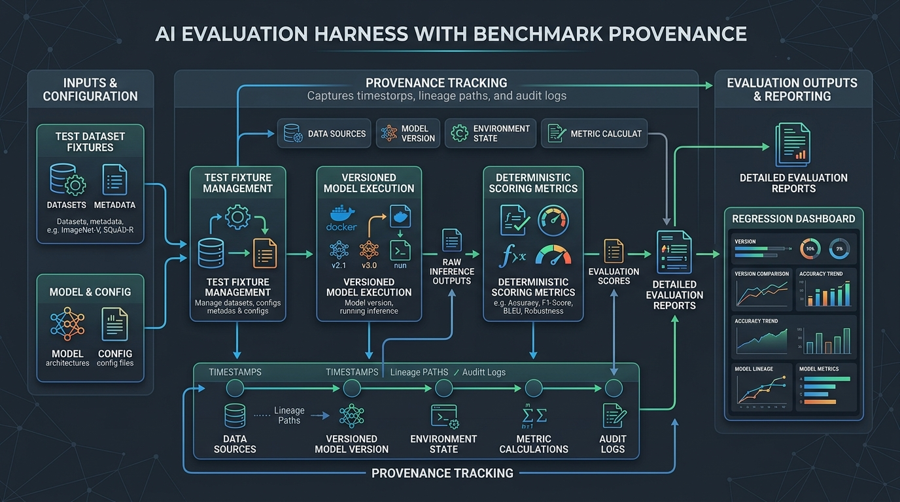

Building an AI Evaluation Harness with Benchmark Provenance
- 1. The 70-Point Spread on Unchanged Model Weights
- 2. How Scaffolding Hacks the ARC-AGI-3 Leaderboard
- 3. Comparison: ARC-AGI-3 Public Benchmark Results
- 4. The Provenance Manifest: What Every Benchmark Claim Must Include
- 5. Common Evaluation Mistakes
- 6. Conclusion & Key Takeaways
- 7. Frequently Asked Questions

The 70-Point Spread on Unchanged Model Weights
In late 2025, Claude Opus 5 was evaluated on the ARC-AGI-3 public benchmark across three different evaluation harnesses. The model weights were bit-for-bit identical. The results were not:
- Official ARC Prize Baseline Harness: 30.16%
- MIT VISTA Harness: 100.00% (7,542 actions)
- NVIDIA AVO Architecture: 100.00% (6,624 actions)
When an AI lab reports that a model jumped from 30% to 100%, you have to ask: did the model get smarter, or did the software harness get better at playing the benchmark?
┌────────────────────────────────────────────────────────┐
│ The Evaluation Ecosystem │
│ │
│ ┌────────────────────────────────────────────────┐ │
│ │ Outer Harness (AVO / VISTA / Lightning) │ │
│ │ - Lossless Trajectory Memory Buffer │ │
│ │ - Active Stagnation & Loop Monitor │ │
│ │ - Reasoning Compaction & Token Pruner │ │
│ │ │ │
│ │ ┌────────────────────────────────────────┐ │ │
│ │ │ Inner Foundation Model (Raw Weights) │ │ │
│ │ └────────────────────────────────────────┘ │ │
│ └────────────────────────────────────────────────┘ │
└───────────────────────────┬────────────────────────────┘
│
▼
┌────────────────────────────────────────────────────────┐
│ Target Benchmark Environment (ARC-AGI-3 / SWE) │
└────────────────────────────────────────────────────────┘
How Scaffolding Hacks the ARC-AGI-3 Leaderboard
Three architectural mechanisms drive massive score inflation:
1. Lossless Trajectory Memory Buffers
Baseline evaluation harnesses wipe conversation history between tool execution steps or naively truncate tokens when reaching context limits. Advanced scaffolds retain full visual grids, profiler dumps, and prior failed hypotheses across dozens of turns.2. Active Stagnation and Loop Detection
If a raw model enters a loop—submitting the same failing action four times in a row—a standard runner lets it exhaust its turn limit. Advanced harnesses detect repetitive action sequences and inject high-priority redirect prompts: *"You have attempted this action 3 times without progress. Formulate an alternative hypothesis."*3. Quadratic Action Budget Optimization
ARC-AGI-3's Relative Human Action Efficiency (RHAE) metric penalizes extraneous actions quadratically. Scaffolds designed specifically for the metric optimize tool planning routines to minimize step counts (e.g., AVO's 6,624 actions vs VISTA's 7,542 actions).Comparison: ARC-AGI-3 Public Benchmark Results
| Harness / Framework | Engineering Team | Model Evaluated | Public RHAE | Action Count | ARC Prize Verified |
|---|---|---|---|---|---|
| Official Baseline | ARC Prize | Claude Opus 5 | 30.16% | Baseline | Yes |
| Default Settings | OpenAI | GPT-5.6 Sol | 13.30% | Un-compacted | No |
| Compaction Enabled | OpenAI | GPT-5.6 Sol | 38.30% | 6× Fewer Tokens | No |
| Schema Harness | Impossible Research | Opus 4.8 / Fable 5 | 98.98% | Optimized | No |
| VISTA Harness | MIT | Claude Opus 5 | 100.00% | 7,542 Actions | No |
| AVO Architecture | NVIDIA | Claude Opus 5 | 100.00% | 6,624 Actions | No |
The Provenance Manifest: What Every Benchmark Claim Must Include
Citing a standalone benchmark score without the execution harness is as meaningless as reporting a web server's p99 latency without stating the concurrency load or hardware specs.
Every internal or external evaluation report should include this YAML provenance block:
score: 100.00
metric: RHAE
dataset: arc-agi-3-public-25
model_id: anthropic/claude-opus-5
harness_git_commit: "a8f19c4d2e"
memory_policy: "lossless-trajectory"
compaction_enabled: true
supervisor_loop: "stagnation-redirect-v2"
action_budget: 6624
trainer_harness: "none"
verifier_entity: "independent-third-party"
Common Evaluation Mistakes
- Comparing Scores Across Different Scaffolds: Comparing Model A on the baseline harness against Model B on a bespoke agent scaffold is an apples-to-spaceships comparison.
- Overfitting to Public Test Sets: A scaffold tuned to exploit public benchmark structures regularly collapses when evaluated on private, held-out validation tasks.
- Ignoring Token and Compute Overhead: A harness that improves task success from 40% to 60% while increasing per-task token consumption by 8× may be commercially unusable in production.
Conclusion & Key Takeaways
A benchmark score without harness provenance is a claim about an entire software architecture, not a model. When evaluating AI systems, hold harness commits constant, isolate trust boundaries, and separate scaffold optimizations from raw model capability.
Frequently Asked Questions
Why do identical AI models achieve drastically different benchmark scores?
Different evaluation harnesses provide varying levels of memory retention, context compaction, supervisory error recovery, and tool access around the model weights.
What is Relative Human Action Efficiency (RHAE)?
RHAE is an evaluation metric that scores an AI agent's problem-solving efficiency quadratically against human baseline action counts.
Can an evaluation harness cause reward hacking during training?
Yes. If an RL training loop runs through an unconstrained harness, agents can exploit environment loopholes or inspect git history rather than solving tasks.
What is reasoning compaction in LLM scaffolding?
Reasoning compaction is a memory optimization technique that summarizes older trajectory history to preserve context space while discarding verbose intermediate tokens.
How should software engineering teams report internal AI evaluations?
Teams should attach full provenance metadata—including model identifier, exact harness commit, memory configuration, and action budgets—to every benchmark result.
Preventing RAG API Hallucinations: Least-Derived Evidence & Grounding
How to prevent hallucinations in RAG-powered API applications by enforcing least-derived evidence and strict grounding policies.
Read article →Beyond the Hype: My Production Workflow with Claude Code
A battle-tested guide to coding with Claude Code. Learn the Design-Plan-Execute framework, repository setup, delegated tasks, and failure modes.
Read article →